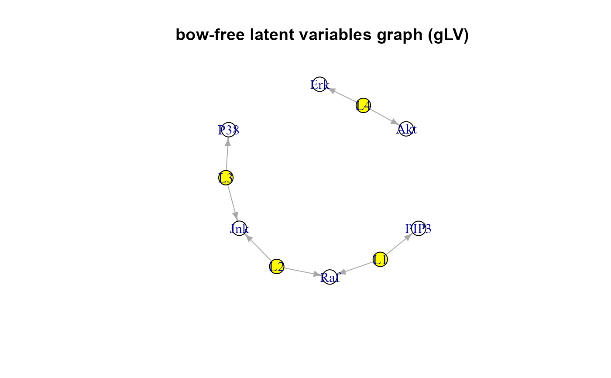

Search for new bow-free covariances and adjust the data matrix by removing latent sources of confounding encoded in them.
SEMbap( graph, data, method = "BH", alpha = 0.05, limit = 30000, verbose = FALSE, ... )
Arguments
| graph | An igraph object. |
|---|---|
| data | A matrix whith rows corresponding to subjects, and columns to graph nodes (variables). |
| method | Multiple testing correction method. One of the values
available in |
| alpha | Significance level for false discovery rate (FDR) used
for either local d-separation tests (below |
| limit | An integer value corresponding to the number of missing
edges of the extracted acyclic graph. Beyond this limit, multicore
computation is enabled to reduce the computational burden.
By default, |
| verbose | A logical value. If FALSE (default), the processed graphs will not be plotted to screen. |
| ... | Currently ignored. |
Value
A list of 3 igraph objects:
"bap", the output bow-free acyclic path diagram,
"guu", the bidirected graph of significant covariances,
"gLV", the directed graph of latent variables (LV) underlying significant covariances (i.e., the canonical graph, where bidirected X <-> Y edges are substituted by directed edges X <- LV -> Y),
"data", the adjusted (de-correlated) data matrix.
Details
SEMbap algorithm makes an exhaustive search of all possible missing edges of the mixed acyclic graph (BAP or DAG) via d-separation P-value screening. The d-separation test evaluates if two variables (X, Y) in an acyclic graph are conditionally independent for a given conditioning set Z, The conditioning set Z is represented in a DAG by the union of the parent sets of X and Y (Shipley, 2000) or the minimal set consisting in the smallest conditioning set Z that makes these two variables independent. A new bow-free covariance is added if there is a significant (X, Y) association, after multiple testing correction. The selected covariance between pairs of nodes (X, Y) is interpreted as the effect of a latent variable (LV) acting on both X and Y; i.e., the LV is an unobserved confounder. These LVs are then removed by conditioning them out from the observed data.
References
Shipley B (2000). A new inferential test for path models based on DAGs. Struct. Equ. Modeling, 7(2): 206-218. <https://doi.org/10.1207/S15328007SEM0702_4>
Brito C and Pearl J (2002). A New Identification Condition for Recursive Models With Correlated Errors. Structural Equation Modeling, 9(4): 459-474.
Whittaker J (2009). Graphical Models in Applied Multivariate Statistics. Wiley Publishing; <ISBN:978-0-470-74366-9>
Author
Mario Grassi mario.grassi@unipv.it
Examples
#> Warning: lavaan WARNING: #> model syntax contains variance/covariance/intercept formulas #> involving (an) exogenous variable(s): [zPIP3 zPKA]; These #> variables will now be treated as random introducing additional #> free parameters. If you wish to treat those variables as fixed, #> remove these formulas from the model syntax. Otherwise, consider #> adding the fixed.x = FALSE option.#> NLMINB solver ended normally after 14 iterations #> #> deviance/df: 66.93929 srmr: 0.0894731 #>#> #>#> DAG conversion: TRUE #> #> Degrees of freedom: #> Input graph = 36 #> Output graph = 36 #> #> d-separation test (minimal set) of 36 edges ... #> Number of significant local tests: 4 / 36 #>#> RICF solver ended normally after 2 iterations #> #> deviance/df: 4.295061 srmr: 0.0340537 #># Model fitting (node perturbation) with adjusted data sem1 <- SEMrun(graph = sachs$graph, data = BAP$data, group = sachs$group)#> NLMINB solver ended normally after 18 iterations #> #> deviance/df: 5.107964 srmr: 0.02799312 #> #> Brown's combined P-value of node activation: 0 #> #> Brown's combined P-value of node inhibition: 0 #>